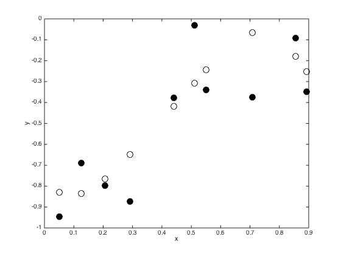
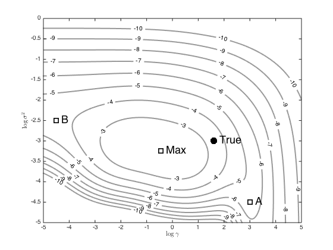
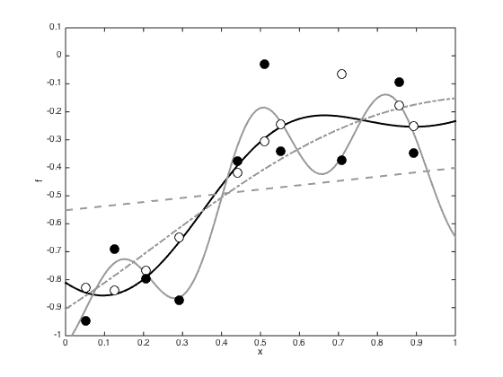

Contents
- gphyper.m
- Generate the data set, and set the GP hyperparameters
- Compute the covariance function
- Sample a true latent function
- Vary gamma and ss (noise variance) on a grid and see what the marginal likelihood looks like
- Compute the predictive function with the true covariance parameters, the ones that maximise the marginal likelihood and the ones from points A and B
gphyper.m
Performs binary GP classification with two-dimensional data
From A First Course in Machine Learning Simon Rogers, August 2016 [simon.rogers@glasgow.ac.uk]
clear all;close all
Generate the data set, and set the GP hyperparameters
Change rng for different datasets
rng(3)
ss = 0.05;
alpha = 1.0;
gamma = 5.0;
N = 10;
x = rand(N,1);
x = sort(x);
% Dataset hack for nicer visualisation.
x(end) = x(end) - 0.04;
Compute the covariance function
Xdi = (repmat(x,1,length(x)) - repmat(x',length(x),1)).^2; C = alpha*exp(-gamma*Xdi);
Sample a true latent function
f = gausssamp(repmat(0,N,1),C,1); % Plot the function figure() plot(x,f,'ko','markersize',10); hold on f = f'; y = f + randn(N,1).*sqrt(ss); plot(x,y,'ko','markersize',10,'markerfacecolor','k') xlabel('x'); ylabel('y');
Vary gamma and ss (noise variance) on a grid and see what the marginal likelihood looks like
[G,SS] = meshgrid(-5:0.01:5,-5:0.05:0); ML = zeros(size(G)); for i = 1:prod(size(G)) CSS = alpha*exp(-exp(G(i))*Xdi) + exp(SS(i))*eye(N); ML(i) = -(N/2)*log(2*pi) - 0.5*log(det(CSS)) - 0.5*y'*inv(CSS)*y; end % Contour the results figure(); hold off [c,h] = contour(G,SS,ML,[-10:-2],'k','linewidth',2,'color',[0.6 0.6 0.6]); clabel(c,h); hold on plot(log(gamma),log(ss),'ko','markersize',10,'linewidth',2,'markerfacecolor','k') text(log(gamma)+0.2,log(ss),'True','fontsize',18) % Plot some points, as used in the book p.313 (these wont make sense if you % use another dataset) [r,c] = find(ML == max(ML(:)),1); other_points = [3 -4.5;-4.5 -2.5;G(r,c) SS(r,c)]; names = {'A','B','Max'}; styles = {'k','k--','b-.'}; for i = 1:length(names) plot(other_points(i,1),other_points(i,2),'ks','markersize',10,'linewidth',2) text(other_points(i,1)+0.2,other_points(i,2),names{i},'fontsize',18) end xlabel('$\log{\gamma}$','interpreter','latex'); ylabel('$\log{\sigma^2}$','interpreter','latex');
Compute the predictive function with the true covariance parameters, the ones that maximise the marginal likelihood and the ones from points A and B
Define a fine grid of test points
testx = [0:0.01:1]'; testXdi = (repmat(x,1,length(testx)) - repmat(testx',length(x),1)).^2; testC = alpha*exp(-gamma*testXdi); % Plot them all figure(); hold off testf = testC'*inv(C + ss*eye(N))*y; plot(testx,testf,'k','linewidth',2) hold on for i = 1:length(names) otherC = exp(-exp(other_points(i,1))*Xdi); othertestC = exp(-exp(other_points(i,1))*testXdi); testf = othertestC'*inv(otherC + exp(other_points(i,2))*eye(N))*y; plot(testx,testf,styles{i},'linewidth',2,'color',[0.6 0.6 0.6]); end plot(x,f,'ko','markersize',10,'markerfacecolor','w'); hold on plot(x,y,'ko','markersize',10,'markerfacecolor','k') ylim([-1 0.1]) xlabel('x') ylabel('f')